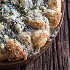

<<<<<<< HEAD
Colourful Recipes
A directory of colourful recipes
Clicking an image will open up the recipe in a new window.

Clicking on the cute chef below will take you to even more delicious recipes.
=======
Colourful Recipes
A directory of colourful recipes
Clicking an image will open up the recipe in a new window.
Clicking on the cute chef below will take you to even more delicious recipes.
>>>>>>> origin/master